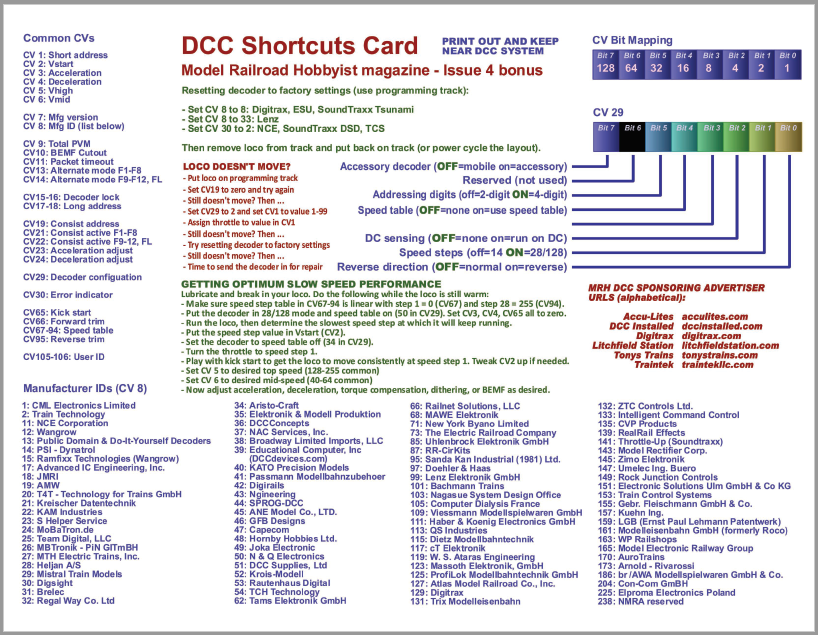
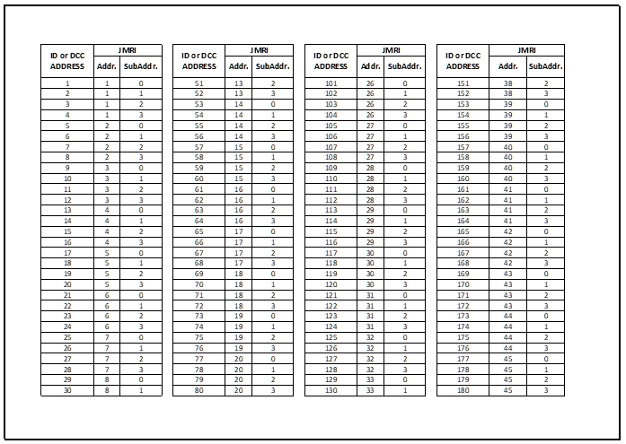

Documents


Java Model Railroad Interface JMRI with EX-CommandStation
JMRI ‘Java Model Railroad Interface’ software suite provides a GUI Graphical User Interface Controller for the EX‑CommandStation.
- The primary JMRI software applications are;
DecoderPro to build and maintain DCC Engine Rosters and read, write, compare & maintain decoder CV’s
PanelPro to create and maintain Panels, Turnouts, Sensors, Signal Lighting & create Routes
OperationsPro to run operating sessions on your model railroad.
JMRI software is supported on Windows & Mac PC’s and on Linux Pi microcontrollers.
With experience, JMRI users can prepare Routing and Automation sequences for their engines to run either by manual Routing or Autonomously by writing extensive Jython/Python.py scripts and setting them up through a myriad of user-friendly panels and sensors, turnouts & routing tools. These scripts can then be placed in GUI buttons on DecoderPro & PanelPro main menus and also displayed as Routing buttons on smartphones with Engine Driver or wiThrottle and other WiFi Throttle app providers.
{kind=link}
{kind=link}
Comprehensive DCC-EX & JMRI Getting Started Guide PDF
For a more extensive overview of setting up EX‑CommandStation with JMRI DecoderPro please download and review the
EX-CommandStation 3.1 & JMRI DecoderPro 2.24 Getting Started Guide.pdf version 1.0
Other Documentation
DCC Shortcuts Card
DCC Manufacture Decoder Identification
{kind=link}
Stationary Decoder Address Table (xlsx Spreadsheet)
With EX-CommandStation’s new linear address function, there is no need to have to convert back and forth between linear addresses and the 2-part address, subaddress format. However, if you use the old format or have a decoder to a switch that uses it, this table can come in handy.
{kind=link}